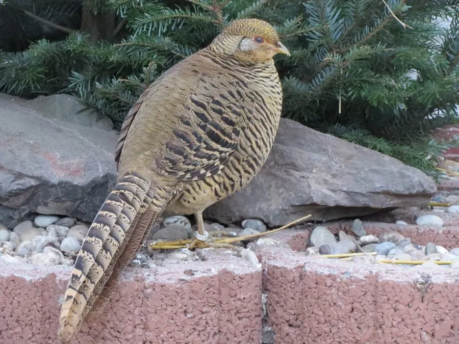

鸟类 · 动物界
红腹锦鸡 Chrysolophus pictus

中国特有的绚丽雉类，雄鸟羽色金红相间、尾羽修长华丽，是民间年画、瓷器与工艺品中常见的“金鸡”。
- 分类
- 门脊索动物门纲鸟纲目鸡形目科雉科属锦鸡属
- 栖息环境
- 海拔 500–2500 米的山地常绿阔叶林、针阔混交林和林缘灌丛
- 地理分布
- 中国特有种，分布于四川、陕西、甘肃、湖北、湖南和贵州等地的山地
- 保护级别
- IUCN 无危（LC）；中国国家二级保护动物
物种志
红腹锦鸡雄鸟体长 100–110 cm，其中尾羽占了一大半，体重约 575–700 g。雄鸟头顶有金黄色羽冠，脸部裸露皮肤橙红，颈部有橙红与黑色相间的羽领，背部羽毛翠绿，胸部、腹部和腰部呈鲜红色，尾羽修长并带黑色斑纹。雌鸟体长 60–70 cm，通体棕褐色并密布黑斑，羽色低调。
红腹锦鸡是中国特有鸟类，分布于四川、陕西、甘肃、湖北、湖南、贵州等地的山地森林，栖息在海拔 500–2500 米的常绿阔叶林、针阔混交林和林缘灌丛。它们以植物嫩叶、种子、果实和昆虫为食，生性机警，多在林下地面活动。繁殖期雄鸟会展示华丽的羽色和羽冠，围绕雌鸟跳舞求偶；每窝产卵 5–8 枚，孵化约 22–24 天。由于羽色华丽长期被捕捉，加上栖息地破碎化，野生种群受到影响，中国将其列为国家二级保护动物。
形态与习性
- 食性植物嫩叶、种子、果实和昆虫
- 体长雄鸟 100–110 cm，雌鸟 60–70 cm
- 体重雄鸟约 575–700 g
- 繁殖每窝 5–8 枚卵，孵化约 22–24 天
- 寿命野外约 10 年
- 羽色雄鸟头顶金色羽冠，胸腹鲜红，背部翠绿
- 文化地位民间年画与陶瓷中的“金鸡”原型
趣味知识
- 红腹锦鸡是中国特有鸟类，雄鸟金红相间的羽色十分华丽。
- 它是民间年画和工艺品中常见的“金鸡”，象征吉祥富贵。
- 雄鸟求偶时会展开羽冠和羽领，绕圈跳舞向雌鸟炫耀。
- 红腹锦鸡的尾羽修长，雄鸟体长有一大半来自尾羽。